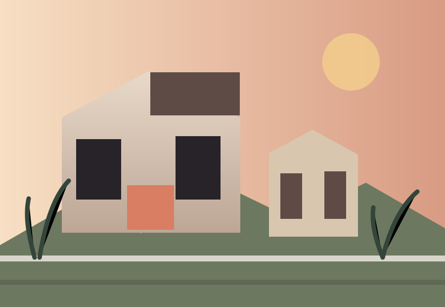
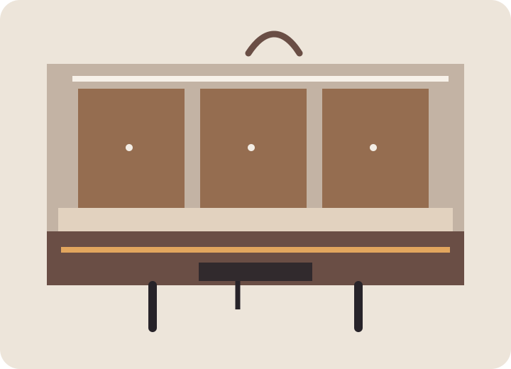
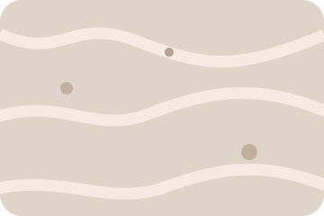

RENOVATION, WITH ROOM TO THINK
Make the home feel inevitable.
Morrow & Mason turns renovation decisions into a clear, tactile path — from the first room note to a brief worth building from.
Preview experience · Quote-first · No real booking or payment

MMSpace / light / material
01
Good renovation work begins before demolition.
We create a shared point of view around how a room should feel, work, and age — then make the next decision easier.
Hold the finish in your mind before it reaches the room.
Compare materials
SELECTED WORK
Quiet moves. Strong rooms.
Open the project shelfSCOPE BUILDER
Turn a feeling into a brief.
Shape a project